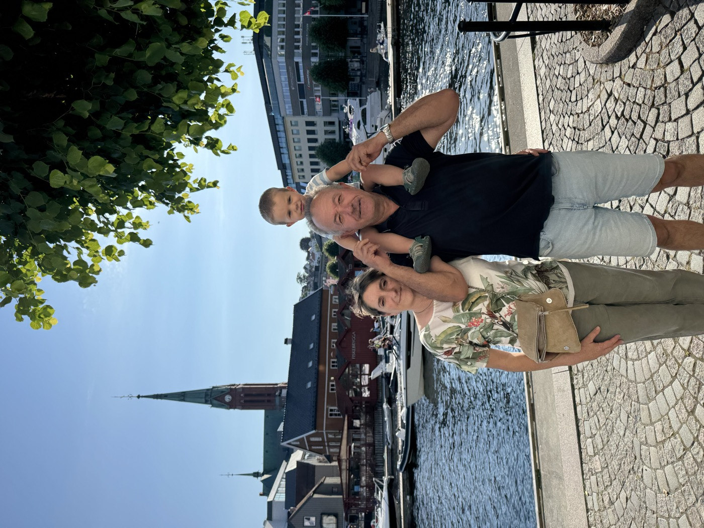

🗓️Day by dayDía a día
Outdoor plans matched to the weather. Thursday is the rainy day → indoor. Planes al aire libre según el tiempo. El jueves llueve → plan de interior.

We arrived & celebrated 💛 Llegamos y lo celebramos 💛
- Arrived in the afternoon and celebrated Mama's birthday exploring Arendal town.
- Llegamos por la tarde y celebramos el cumple de mamá paseando por Arendal.
History of ArendalHistoria de Arendal
Hove & Spornes beaches (Raet National Park) — rock & sand, water play, lighthouse views.Playas de Hove y Spornes (Parque Nacional Raet) — roca y arena, juego con agua, vistas a los faros.
The pretty white-house harbour town — a stroll and a wander.El bonito pueblo portuario de casas blancas — un paseo tranquilo.
Walks hereRutas aquí
History hereHistoria de aquí
- ~1 hr NE (E18 → Akland → Fv416). Norway's prettiest preserved white wooden town, on the Skagerrak. Park at Tjenna (~10 min flat walk in) — arrive before ~11:00 in peak season.
- ~1 h al NE (E18 → Akland → Fv416). La ciudad de casas blancas de madera mejor conservada de Noruega, en el Skagerrak. Aparcad en Tjenna (~10 min andando llano) — llegad antes de las ~11:00 en temporada alta.
Harbour & white-town stroll along Strandgata (flat, stroller-easy), then the Risør Akvarium (open daily 11:00–16:00). Small (~45 min) but a toddler hit: feed the fish, crab-fishing, draw-your-fish room.Paseo por el puerto y la ciudad blanca por Strandgata (llano, fácil con carrito), y luego el Acuario de Risør (abierto a diario 11:00–16:00). Pequeño (~45 min) pero un éxito para el peque: dar de comer a los peces, pesca de cangrejos, sala para dibujar tu pez.
A harbour terrace on Strandgata: Risør Hotel terrasse (safest family pick), Kortreist Lykke, or Risør Fiskemottak (catch-of-the-day seafood); cake & coffee at Stavelin. Mikel can nap in the stroller — or on the boat (below).Una terraza del puerto en Strandgata: Risør Hotel terrasse (lo más seguro para familias), Kortreist Lykke o Risør Fiskemottak (pescado del día); pastel y café en Stavelin. Mikel puede dormir en el carrito — o en el barco (abajo).
The historic wooden ferry M/F Øisang (Norway's oldest!) — tell the crew "om bord" and they drop you at Lille Danmark, a sheltered, gentle toddler beach. Tue departures ~every 30 min from 11:15. Takes cards, pram-friendly (35 kr). The ride is half the fun; Mikel can nap on the boat/beach.El ferry histórico de madera M/F Øisang (¡el más antiguo de Noruega!) — decid a la tripulación "om bord" y os dejan en Lille Danmark, una playa para el peque resguardada y suave. Salidas el martes ~cada 30 min desde las 11:15. Aceptan tarjeta, apto carrito (35 kr). El viaje es media diversión; Mikel puede dormir en el barco/playa.
The "Agnes" ferry from Strandgata 19, every half hour from 12:00, ~7 min crossing. A lighthouse islet with a casual Kro (open 12:00; gourmet restaurant from 14:00), swimming off the rocks, short paths. Scenic — but rocky edges (watch Mikel) and cash / Vipps only, 100 kr return (no cards on the boat). Pick one boat — a napping toddler means time for just one.El ferry "Agnes" desde Strandgata 19, cada media hora desde las 12:00, ~7 min de travesía. Un islote con faro, un Kro informal (abre 12:00; restaurante gourmet desde 14:00), baño en las rocas y senderos cortos. Bonito — pero con bordes rocosos (vigilad a Mikel) y solo efectivo / Vipps, 100 kr ida y vuelta (no aceptan tarjeta en el barco). Elegid un barco — con la siesta del peque solo da tiempo a uno.
Risør's town hill (90 m) and its best walk — a forest recreation area right above the centre. The reward: Risørflekken, a 1600s white sea-mark with a panorama over the town, skerries & Skagerrak, plus a WWII coastal fort ("Festung Urheia" — bunkers, trenches, cannon positions, a command bunker) and two small swimming lakes. Very family-friendly; toilets & parking at the top (Buvikbakken), or walk up the kultursti from Torvet 1 in the centre. Carrier for Mikel.La colina de Risør (90 m) y su mejor paseo — una zona forestal justo encima del centro. La recompensa: Risørflekken, una marca marina blanca del siglo XVII con panorámica sobre la ciudad, los islotes y el Skagerrak, además de un fuerte costero de la II Guerra Mundial ("Festung Urheia" — búnkeres, trincheras, posiciones de cañón, un búnker de mando) y dos pequeños lagos de baño. Muy familiar; baños y aparcamiento arriba (Buvikbakken), o subid por la kultursti desde Torvet 1 en el centro. Mochila para Mikel.
Tvedestrand is right on the route home (just off the E18, ~25–30 min from Risør). Stop at the harbour (Brygga) for ice cream and a short waterfront wander — the book town's pretty quay. Then ~30 min home to Tromøy.Tvedestrand está justo en el camino de vuelta (junto a la E18, ~25–30 min de Risør). Parad en el puerto (Brygga) para un helado y un paseo corto junto al agua — el bonito muelle de la ciudad de los libros. Luego ~30 min a casa, a Tromøy.
Walks hereRutas aquí
History hereHistoria de aquí
- The big one — and worth every krone. Norway's #1 family attraction: a proper zoo, a Sabeltann pirate world, the real Kardemomme By from the storybook, and rides — all in one ticket. An easy full day; you won't see it all.
- El plan estrella — y vale cada corona. La atracción familiar nº 1 de Noruega: un zoo de verdad, el mundo pirata de Sabeltann, la auténtica Kardemomme By del cuento y atracciones — todo en una entrada. Un día entero fácil; no os dará tiempo a verlo todo.
- 🦁 For Mikel: wide-eyed at moose, wolves & lynx up close, a train ride, a carousel, playgrounds everywhere — pure toddler heaven.
- 🦁 Para Mikel: ojos como platos viendo alces, lobos y linces de cerca, un tren, un carrusel y parques por todas partes — el paraíso del peque.
- ~55–65 min via E18. Open 09:00–19:00. Go early (09:30–10:00) — animals are liveliest and you beat the queues. Buy tickets online the night before (cheaper than the gate, prices climb during the day).
- ~55–65 min por la E18. Abre 09:00–19:00. Id pronto (09:30–10:00) — los animales están más activos y evitáis las colas. Comprad las entradas online la noche antes (más baratas que en taquilla, el precio sube a lo largo del día).
- Save money on food: picnics are welcome (loads of benches) — bring lunch and just treat yourselves to a bakery stop in Hakkebakkeskogen.
- Ahorrad en comida: se permite picnic (hay muchísimos bancos) — llevad la comida y daos solo el capricho de la panadería en Hakkebakkeskogen.
🧸 Itinerary for Mikel (with a parent)Itinerario para Mikel (con un adulto)
- Morning · animals firstMañana · primero los animales — arrive at opening; see the Nordic Wilderness (moose, wolves, lynx) and the farm/petting animals while he's fresh.llegad a la apertura; ver la Naturaleza Nórdica (alces, lobos, linces) y la granja mientras está descansado.
- Ride the Reli Safari little train round Barnas Afrika.Montad en el trenecito Reli Safari por Barnas Afrika.
- Into Kardemomme By: the old-fashioned carousel and the Kaffekoppen teacups (both perfect for the littlest), plus the Tobias Tower & little houses.A Kardemomme By: el carrusel antiguo y las tazas Kaffekoppen (perfectos para los más pequeños), y la Torre de Tobias y las casitas.
- Lunch & napComida y siesta — eat, then Mikel naps in the stroller along the shaded paths.comed y luego Mikel duerme la siesta en el carrito por los caminos con sombra.
- Afternoon · playTarde · juego — Jungelland playground & the Julius jungle trail; the Hakkebakkeskogen playground + bakery treat.parque Jungelland y el sendero de Julius; el parque de Hakkebakkeskogen + dulce en la panadería.
- Up to KuToppen: Mosks tractor track and the indoor activity house (drums + two-floor slide).Subid a KuToppen: la pista de tractores de Mosk y la casa de actividades cubierta (batería + tobogán de dos plantas).
- Wind down with an ice cream and one last carousel before closing.Terminad con un helado y un último carrusel antes del cierre.
🎢 Itinerary for the grown-upsItinerario para los mayores
- While Matteo has Mikel, head for the bigger rides — no toddler pace, just enjoy.Mientras Matteo está con Mikel, id a las atracciones grandes — sin ritmo de bebé, a disfrutar.
- JungelBob — the bobsled coaster (big stomach-drops!).la pista de bobsleigh (¡sustos en el estómago!).
- Fallet — rise up the tower, then free-fall back down.subid la torre y caída libre hacia abajo.
- Fyrtårnet — hoist yourself 9 m up by your own strength.subid 9 m con vuestra propia fuerza.
- Spøkelseshuset & Grevens forheksede labyrint — the ghost house & haunted maze.la casa del terror y el laberinto encantado.
- Klatrefjellet — the big climbing rock (slip and you just slide down).la gran roca de escalada (si resbaláis, solo os deslizáis).
- Calmer option: a stroll up Kaptein Sabeltann's pirate world or catch a show (check the day's times in the app).Opción tranquila: paseo por el mundo pirata de Kaptein Sabeltann o ver un espectáculo (mirad los horarios del día en la app).
- Meet back up for lunch — agree a spot & time.Reuníos para comer — acordad sitio y hora.
Walks hereRutas aquí
About DyreparkenSobre Dyreparken
A slow rainy morning at the house — we made lasagna together. 💛Una mañana lluviosa y tranquila en casa — hicimos lasaña juntos. 💛
Indoor soft-play in Arendal (Bulder Lekeland, ~10 min) — 2,000 m² of ball pits, slides & climbing. We all ran around with Mikel and he wore us out — and was still going strong afterwards. 😅 A perfect rainy-day win.Parque de juego cubierto en Arendal (Bulder Lekeland, ~10 min) — 2.000 m² de piscinas de bolas, toboganes y escalada. Corrimos todos con Mikel y nos dejó agotados — y él seguía a tope después. 😅 Un planazo para día de lluvia.
Walks here (rain-friendly)Rutas aquí (aptas con lluvia)

Full-day route: Parking → Posebyen → Fiskebrygga → Markens gate → Christiansholm Fortress → Bystranda (~2.5–3 km total, all flat).Ruta del día: Aparcamiento → Posebyen → Fiskebrygga → Markens gate → Fortaleza de Christiansholm → Bystranda (~2,5–3 km en total, todo llano).
Start in Posebyen — the charming grid of old white wooden houses — then down to the Fiskebrygga (fish market & quay) for the harbour buzz. Easy, flat, lots to look at for Mikel. Grab a coffee & a birthday skillingsboller (cinnamon bun) somewhere pretty.Empezad en Posebyen — la encantadora cuadrícula de casas blancas de madera — y bajad a la Fiskebrygga (mercado de pescado y muelle) para el ambiente del puerto. Llano, fácil, mucho que mirar para Mikel. Tomad un café y un skillingsboller (bollo de canela) de cumpleaños en algún sitio bonito.
The birthday meal — a harbour terrace at Fiskebrygga: Sjøhuset (classic seafood, big terrace) or Bønder i Byen (local, family-OK). Book a table in advance for the group. Mikel can nap in the stroller right after, so the grown-ups linger over coffee & cake.La comida de cumpleaños — una terraza del puerto en Fiskebrygga: Sjøhuset (marisco clásico, gran terraza) o Bønder i Byen (local, apto familias). Reservad mesa con antelación para el grupo. Mikel puede dormir la siesta en el carrito justo después, así los mayores alargan el café y el pastel.
Wander the pedestrian shopping street Markens gate (cafés, shops, street life) while Mikel sleeps, then out to Christiansholm Fortress (1672 round tower) and the Kilden waterfront for sea views.Pasead por la calle peatonal Markens gate (cafés, tiendas, ambiente) mientras Mikel duerme, luego hasta la Fortaleza de Christiansholm (torreón de 1672) y el paseo marítimo de Kilden con vistas al mar.
Right in town: Bystranda, a clean city beach with shallow water and grass — easy for a toddler paddle and a sit-down. A final ice cream, then drive home (~17:00) for a relaxed evening.En plena ciudad: Bystranda, una playa urbana limpia con agua poco profunda y césped — fácil para que el peque chapotee y para sentarse. Un último helado y de vuelta a casa (~17:00) para una tarde tranquila.
Afternoon route: Markens gate → Christiansholm Fortress → Kilden waterfront → Bystranda (~1.5 km, flat & scenic).Ruta de la tarde: Markens gate → Fortaleza de Christiansholm → paseo de Kilden → Bystranda (~1,5 km, llano y con vistas).
Walks hereRutas aquí
History of KristiansandHistoria de Kristiansand
- Ferry from Pollen (~20–30 min). Book each leg online. Can stop at Revesand on Tromøy on request (call +47 994 61 235, ≥30 min ahead).
- Ferry desde Pollen (~20–30 min). Reservad cada trayecto online. Puede parar en Revesand (Tromøy) si lo pedís (llamad al +47 994 61 235, con ≥30 min de antelación).
- Car-free island: beach, swimming, old harbour houses. Café Merdø Kro (pizza, fish soup) — check their Facebook that morning.
- Isla sin coches: playa, baño, casas antiguas del puerto. Café Merdø Kro (pizza, sopa de pescado) — mirad su Facebook esa mañana.
- Pack light — bring a carrier rather than a stroller.
- Llevad poco peso — mejor mochila portabebé que carrito.
Walks hereRutas aquí
History of MerdøHistoria de Merdø
- One last beach morning at Hove, or whatever you skipped during the week.
- Última mañana de playa en Hove, o lo que os quedara pendiente de la semana.
Walks near base (Tromøy)Rutas cerca de casa (Tromøy)
History of TromøyHistoria de Tromøy
🌤️Weather forecastPrevisión del tiempo
Updated from yr.no / timeanddate. Sunset is ~22:30 — long evenings! De yr.no / timeanddate. El sol se pone ~22:30 — ¡tardes muy largas!
- ☀️ Mon 29 · 22°C · scattered cloud, drynubes dispersas, seco
- ⛅ Tue 30 · 21°C · overcast, drynublado, seco
- ☀️ Wed 1 · 22°C · mostly cloudy, drybastante nublado, seco
- 🌧️ Thu 2 · 18°C · rain showers, 70%, 7mmchubascos, 70%, 7mm
- 💨 Fri 3 · 21°C · dry, breezy 31 km/hseco, viento 31 km/h
- ⛅ Sat 4 · 19°C · light showers possible 18%posibles chubascos 18%
- ☀️ Sun 5 · 21°C · afternoon clouds, drynubes por la tarde, seco
🅿️Parking & carsAparcamiento y coches
- Dyreparken: ~130 NOK/day. Plate recognition — foreign plates must pay before leaving via the APCOA FLOW app or machine. First 30 min free. Two cars may be split between lots → agree a meeting point.
- Dyreparken: ~130 NOK/día. Lectura de matrícula — las matrículas extranjeras deben pagar antes de salir con la app APCOA FLOW o en máquina. Primeros 30 min gratis. Los dos coches pueden ir a parkings distintos → quedad en un punto de encuentro.
- Hove / Spornes: paid summer parking at Spornes beach lot & Hove leirsenter. Arrive before late morning on sunny days.
- Hove / Spornes: aparcamiento de pago en verano en Spornes y Hove leirsenter. Llegad antes del mediodía los días de sol.
- Grimstad: Grømbukt harbourside lots (short flat walk to the quay).
- Grimstad: parkings de Grømbukt junto al puerto (paseo corto y llano al muelle).
- Lillesand: Lillesand Gjestehavn by the square; Tingsaker is the larger fallback (5-min walk).
- Lillesand: Lillesand Gjestehavn junto a la plaza; Tingsaker es la alternativa grande (5 min andando).
- Arendal centre: Pollen / Torvet car parks. Pay by app (EasyPark) or machine.
- Centro de Arendal: parkings de Pollen / Torvet. Pago por app (EasyPark) o máquina.
- Nearest cluster: Færvik / Brattekleiv area on Tromøy (Coop, Kiwi / Rema 1000).
- Lo más cercano: zona de Færvik / Brattekleiv en Tromøy (Coop, Kiwi / Rema 1000).
- Bigger stores across the bridge at Stoa, ~10–15 min (Coop Extra, Meny).
- Tiendas más grandes pasando el puente en Stoa, ~10–15 min (Coop Extra, Meny).
🧸Kids & playgroundsNiños y parques de juego
Toddler-friendly spots to burn energy, close to base. Sitios para que el peque gaste energía, cerca de casa.
- Waterfront park ~2 km NE of the centre: playground, grassy lawns, and Barbubukt bathing bay with a jetty & sun terraces — good for paddling on a warm day.
- Parque junto al mar a ~2 km al NE del centro: parque infantil, césped y la bahía de baño Barbubukt con embarcadero y terrazas — bueno para chapotear si hace calor.
- Also sand volleyball, street basketball & a skate area (for bigger kids). Easy promenade walk into Pollen.
- También vóley playa, baloncesto callejero y zona de skate (para niños mayores). Paseo fácil por el malecón hasta Pollen.
Lekeplass på Torvet · town-square playgroundLekeplass på Torvet · parque en la plazaS
Arendal, ~10 min. Big playground right on the main square, just by the road tunnel. Central, flat, perfect for burning toddler energy before/after lunch in town.
Arendal, ~10 min. Gran parque infantil en la plaza principal, junto al túnel. Céntrico, llano, perfecto para que el peque gaste energía antes/después de comer en el pueblo.
Bulder Lekeland · indoor soft-playBulder Lekeland · juego cubiertoS
Arendal, ~10 min. Indoor soft-play (ball pits, slides, soft climbing) aimed at small children — a great rainy-day toddler win. Check current hours on arrival.
Arendal, ~10 min. Juego blando cubierto (piscinas de bolas, toboganes) pensado para los más pequeños — gran plan para un día de lluvia. Comprobad el horario al llegar.
Spornes beach (Tromøy) · best toddler beachPlaya de Spornes (Tromøy) · mejor playa para el pequeS/C
~10–15 min, on your own island. Sandy patches with shallow, gentle entry — the best toddler bathing beach nearby. Part of Raet National Park.
~10–15 min, en vuestra propia isla. Zonas de arena con entrada poco profunda y suave — la mejor playa de baño para el peque cerca. Parte del Parque Nacional Raet.
Skyland Aktivitetspark · trampolinesSkyland Aktivitetspark · camas elásticasS
Arendal. Trampoline/activity park — better for older kids, but usually has a little-kids zone. Good if the older members want activity. Verify the toddler zone on arrival.
Arendal. Parque de camas elásticas — mejor para niños mayores, pero suele tener zona para pequeños. Bueno si los mayores quieren actividad. Confirmad la zona para peques al llegar.
Fløyheia glass lift · quick noveltyAscensor de cristal Fløyheia · novedad rápidaS
Arendal centre. 60 m glass elevator up to a viewpoint over town, the islands & Galtesund. A fun quick ride a 2-year-old enjoys, café at the top.
Centro de Arendal. Ascensor de cristal de 60 m hasta un mirador sobre el pueblo, las islas y Galtesund. Un paseo corto y divertido que gusta a un niño de 2 años, café arriba.
🥾Hikes & walksRutas y paseos
S = stroller-friendly · C = bring a carrier S = apto carrito · C = mejor mochila portabebé
Easy — with the toddler & grandparentsFáciles — con el peque y los abuelos
Hove & Spornes coastCosta de Hove y SpornesS/C
Tromøy, ~10–15 min. 1–4 km, your own pace. Gravel roads are stroller-OK; the beach rocks need a carrier. The signature easy outing in Raet National Park, with toilets & parking.
Tromøy, ~10–15 min. 1–4 km, a vuestro ritmo. Los caminos de grava admiten carrito; las rocas de la playa piden mochila. El paseo fácil por excelencia en el Parque Nacional Raet, con baños y aparcamiento.
Langsæ lake loop (by KUBEN)Vuelta al lago Langsæ (junto a KUBEN)S
Arendal, ~10 min. Flat lakeside path ~2–3 km, fully stroller-friendly. Easy to combine with the KUBEN museum.
Arendal, ~10 min. Camino llano junto al lago ~2–3 km, totalmente apto para carrito. Fácil de combinar con el museo KUBEN.
Nidelva river pathSendero del río NidelvaS
West of Arendal (Nedenes/Rykene), ~15–20 min. Flat riverside, 2–4 km, stroller-OK on surfaced stretches. Gentle, birdlife, part of Raet National Park.
Al oeste de Arendal (Nedenes/Rykene), ~15–20 min. Junto al río, llano, 2–4 km, apto carrito en los tramos pavimentados. Suave, con aves, parte del Parque Nacional Raet.
Pollen & Tyholmen town strollPaseo por Pollen y TyholmenS
Arendal centre, ~10 min. Flat, paved, 1–3 km. Harbour, old town, cafés — great low-effort or backup walk.
Centro de Arendal, ~10 min. Llano, pavimentado, 1–3 km. Puerto, casco antiguo, cafés — paseo fácil o plan B.
"Real" walks — for whoever wants moreRutas "de verdad" — para quien quiera más
Hove round trail (Spornes rundt)Circular de Hove (Spornes rundt)C
Tromøy, ~10–15 min. ~5–7 km loop, 1.5–2.5 hrs, easy–moderate (roots, rock, beach). Carrier for the toddler. The best gentle-but-real coastal hike, with swimming stops.
Tromøy, ~10–15 min. Circular de ~5–7 km, 1,5–2,5 h, fácil-moderada (raíces, roca, playa). Mochila para el peque. La mejor ruta costera suave pero "real", con paradas para bañarse.
Tromøy interior viewpointMirador interior de TromøyC
Central Tromøy, ~10–15 min. ~3–5 km, 1.5–2 hrs, moderate climb. Carrier. Forest knoll with archipelago views, quieter than the coast.
Centro de Tromøy, ~10–15 min. ~3–5 km, 1,5–2 h, subida moderada. Mochila. Cerro boscoso con vistas al archipiélago, más tranquilo que la costa.
Arendal town forest (Marka) loopsCirculares del bosque de Arendal (Marka)C
Behind Arendal, ~10–15 min. 4–6 km, moderate, lakes & ridges. Carrier off the gravel roads. A proper leg-stretch without driving far.
Detrás de Arendal, ~10–15 min. 4–6 km, moderada, lagos y lomas. Mochila fuera de las pistas de grava. Un buen paseo sin conducir lejos.
🌧️If the weather goes badSi el tiempo empeora
Quick swaps for any day that turns wet. Cambios rápidos para cualquier día que se ponga lluvioso.
- Vitensenteret Sørlandet (Arendal) — science centre, under-3s room. Closest indoor pick.
- Vitensenteret Sørlandet (Arendal) — centro de ciencia, sala para menores de 3. Lo más cercano.
- Aquarama (Kristiansand, ~1 hr) — indoor water park, wave pool & toddler pools.
- Aquarama (Kristiansand, ~1 h) — parque acuático cubierto, piscina de olas y piscinas para bebés.
- Risør Aquarium (~45–55 min) — kids feed fish, crab-fishing, touch tanks. Daily 11:00–16:00.
- Acuario de Risør (~45–55 min) — los niños dan de comer a los peces, pesca de cangrejos. A diario 11:00–16:00.
- Indoor play / lekeland in the Arendal area — burn toddler energy.
- Parque infantil cubierto / lekeland en la zona de Arendal — para gastar energía.
- Boat → town: if the Merdø/boat day rains, do a covered MS Nidelv tour or a town stroll (Arendal/Grimstad arcades & cafés).
- Barco → pueblo: si el día de Merdø/barco llueve, haced el tour cubierto del MS Nidelv o pasead por un pueblo (cafés de Arendal/Grimstad).
Want to stay outdoors in the rain?¿Queréis seguir al aire libre con lluvia?
18°C + good rain gear is fine for short bursts — the Norwegian way. Best wet-but-outdoor options: 18°C + buen chubasquero se aguanta a ratos — al estilo noruego. Mejores opciones al aire libre con lluvia:
- Covered boat trip: the MS Nidelv archipelago tour (12:00 / 14:30, ~1 hr) — out on the water but dry under cover.
- Paseo en barco cubierto: el tour por el archipiélago en el MS Nidelv (12:00 / 14:30, ~1 h) — en el agua pero a cubierto.
- Forest walk: trees shelter you better than the open coast — try the Langsæ lake loop or a Tromøy woodland path (see Hikes).
- Paseo por el bosque: los árboles protegen más que la costa abierta — probad la vuelta al lago Langsæ o un sendero boscoso de Tromøy (ver Rutas).
- Town wander + cafés: Arendal or Grimstad — duck between showers, ice cream & coffee stops.
- Paseo por el pueblo + cafés: Arendal o Grimstad — entre chubascos, paradas de helado y café.
- Bomuldsfabriken sculpture park in the old mines — partly sheltered, free, and outdoors-ish (see Museums).
- Parque de esculturas de Bomuldsfabriken en las viejas minas — parcialmente cubierto, gratis y semi-exterior (ver Museos).
🏛️Museums (optional / rainy day)Museos (opcional / día de lluvia)
Children 0–18 are free at most of these. Niños de 0 a 18 años gratis en la mayoría.
Vitensenteret Sørlandet · scienceVitensenteret Sørlandet · ciencia
Arendal waterfront, ~5–10 min. Hands-on science centre with an under-3s room & café. Best with the toddler. ~11:00–16:00 in summer (verify price/hours).
Puerto de Arendal, ~5–10 min. Centro de ciencia interactivo con sala para menores de 3 y café. El mejor con el peque. ~11:00–16:00 en verano (confirmad precio/horario).
KUBEN · regional historyKUBEN · historia regional
Arendal, ~10 min. Cultural-history museum, maritime exhibits, giant walk-in book, café. Adult 100 NOK, kids free. Summer: Mon–Fri 10–17, Sat–Sun 12–17.
Arendal, ~10 min. Museo de historia cultural, exhibiciones marítimas, libro gigante, café. Adulto 100 NOK, niños gratis. Verano: L–V 10–17, S–D 12–17.
Bomuldsfabriken · contemporary artBomuldsfabriken · arte contemporáneo
Arendal, ~10 min. Big contemporary-art hall in an old cotton factory + outdoor sculpture park in 400-yr-old mines (buggy-friendly). FREE. Tue–Sun 11–17 (Thu to 20), closed Mon.
Arendal, ~10 min. Gran sala de arte contemporáneo en una antigua fábrica de algodón + parque de esculturas al aire libre en minas de 400 años (apto carrito). GRATIS. M–D 11–17 (J hasta 20), lunes cerrado.
Grimstad Maritime MuseumMuseo Marítimo de Grimstad
Grimstad, ~25–30 min. Family-friendly maritime museum on an old shipyard — ship models, hands-on, room to roam. Best of the Grimstad set for a toddler. Adult 100 NOK. Daily 10–15.
Grimstad, ~25–30 min. Museo marítimo apto para familias en un antiguo astillero — maquetas, interactivo, espacio para moverse. El mejor de Grimstad para el peque. Adulto 100 NOK. A diario 10–15.
Ibsen House · GrimstadCasa de Ibsen · Grimstad
Grimstad, ~25–30 min. The apothecary where Ibsen wrote Catilina. Guided only (English 12:00 & 15:00). Adult 100 NOK. Daily 11–16. So-so for toddlers but short.
Grimstad, ~25–30 min. La botica donde Ibsen escribió Catilina. Solo con guía (en inglés 12:00 y 15:00). Adulto 100 NOK. A diario 11–16. Regular para bebés pero corto.
Næs Ironworks Museum · TvedestrandMuseo de la Ferrería Næs · Tvedestrand
~30–35 min. Norway's best-preserved ironworks — blast furnace with working water wheel, hourly tours 11–16. Adult 120 / family 300 NOK. Carrier handy.
~30–35 min. La ferrería mejor conservada de Noruega — alto horno con rueda hidráulica en funcionamiento, visitas cada hora 11–16. Adulto 120 / familia 300 NOK. Mejor con mochila.
Risør AquariumAcuario de Risør
~45–55 min. Southern Norway's only saltwater aquarium — 100+ species, feed the fish, crab-fishing, colour-your-fish room. Excellent for toddlers. Daily 11–16.
~45–55 min. El único acuario de agua salada del sur de Noruega — más de 100 especies, dar de comer a los peces, pesca de cangrejos. Excelente para bebés. A diario 11–16.
Merdøgaard · Merdø islandMerdøgaard · isla de Merdø
Ferry from Pollen. Preserved 1700s coastal home — pairs boat + beach + museum into one toddler-friendly day. Daily in summer.
Ferry desde Pollen. Casa costera del siglo XVIII conservada — combina barco + playa + museo en un día apto para el peque. A diario en verano.